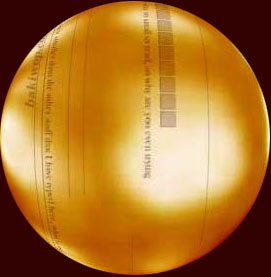

This gold sphere was the first logo-ish type thing I made for my website (I had something else before made by someone else...see below). This would have been back in 2000. It was for the splash page (or splash screen as it seems to be actually called, though I don't remember that name (I'm getting old dontchaknow)). This gold sphere was one of the reasons I got my third web design gig (it seemed to impress my interviewers).
So what is this and why the gold sphere? I'm going back. Way back. Deep cuts as the DJs say. I'm going to try to piece together content going back as far as I can. So, below, there will be links in a rough chronological order to some of my old stuff.
These pages were made during countless hours in front of a computer I could barely afford late at night (into early mornings) with the bedroom bathed in the light of the computer monitor while my girlfriend (then fiancee, then wife) laid in bed behind me. I'd throw on my headphones and stream trance music off Winamp (it really whips the llama's ass) and just design and code the hours away.
Some of it will overlap - same content different format - and some of it is probably best lost to the silicons of time, but whatever I can dig up I'll put here.
Oh yeah. And links in thesepages will probably go to archive.org as many sites linked to no longer exist (pour one out, yo).
I'd swear up and down that there was something bakiwop.com before the access.bakiwop.com and bakiwop.com/excess in 2000, but I'll be gosh darned if I can find any actual proof of it. I don't even have any real memory of it, just an inkling. I do remember, however, asking a very talented cousin to make me a logo for a website that was hosted on the university's servers back in 1997. This is where I first came up with bakiwop as an online handle (real names online weren't cool, natch). I remember the instructions to my cousin were along the lines of, "draw whatever you think a bakiwop might look like." Any of the actual files, though? Lost to the digital sea. Maybe they'll wash up somewhere some day.
access.bakiwop.com and bakiwop.com/excess from 2000 and 2001.
I remember sitting at my second web design gig, playing with the idea of my own website. With my own URL (no tilde links for this guy). bakiwop.com was born (again?).
I don't think the term blog had been coined yet, but I'd found some (while researching moving back to the Twin Cities (something I've wanted to do repeatedly over the decades)) and wanted to do the same thing (make a website, along with move, in this case). I found two blogs written by locals: Jodi Chromey and Jason Kottke. Oddly enough, both those blogs are still up and running with archives going back to their beginnings - pretty nifty.
So I made a blog, hosted it I don't know where, and have none of the actual posts. Thankfully, archive.org to the rescue. All I remember is writing the blog in HTML and wanting to make it look like Jodi's and Sarah's. The url was access.bakiwop.com and then bakiwop.com/excess (I gave access to my life and then shared to excess - how droll!)
Oh! And looking at the code? I'd forgotten about spacer gifs!
And oh! Oh! Evidently I used ASP instead of PHP - it was the VHS vs. Beta of its day and I choose...poorly.
So here's access.bakiwop.com and bakiwop.com/excess from 2000 and 2001. The posts weren't all on one page, and some of the flash stuff I made is gone forever (there was a subdomain in there - dreams.bakiwop.com using flash), but the basic layout and the writing is there. Oh, and one of the reasons I tend to remember a site before this one? The stories Rosa, Cable Guy, Fall Rollerblading, and 21 Steps to a Better Alien Abduction were on the earliest archive on archive.org.
The Rutabaga was my version of The Onion only less well known, less funny, and less original. I was interviewed by someone (can't remember who and can't remember where) for the article, "Man Sues Domino's After Opening Door And Finding No One There".
My favorite pictures taken with an actual digital camera around the turn of the millennium. The header gif was originally made for a client while working as a web designer at the Milwaukee Journal Sentinel, I just tweaked it a bit for myself.
Herbie! Herbie is something I started drawing in grade school. Stick man art. I'd draw landscapes - say cliffs - then have a bunch of Herbies doing cliff diving and snorkeling and sailing and getting chomped by sharks and cooking out and riding bicycles and well you get the idea. Once I learned about animated gifs it was only a matter of time before I animated Herbie doing things.
This seems like one of those things I did pre-2000 but can't provide any documentation for it, so it goes here in the timeline.
Ugh. This one is painful. Low point writing-wise. Kinda dig the design - like the kilroy dude holding the navigation and all the pretty blue.
I ran for president! Some slogans included: kissin' babies - and your butt - for the presidency; walking for president because running is too much damn work; a vote for bakiwop is a vote for bakiwop; and bakiwop in '04 because there's no election in '05.